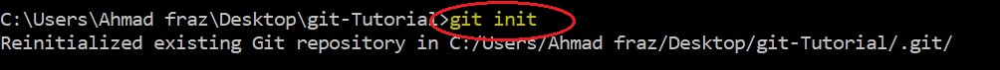
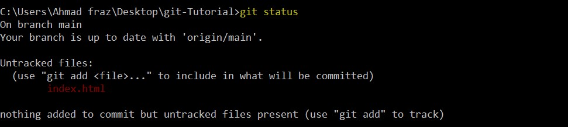
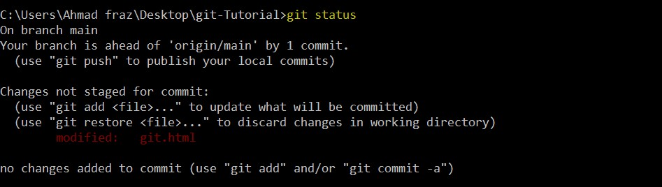
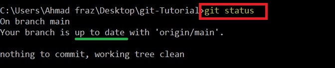
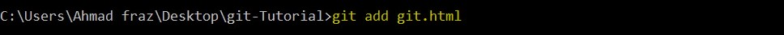
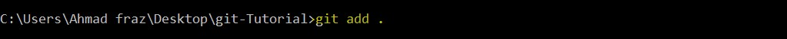
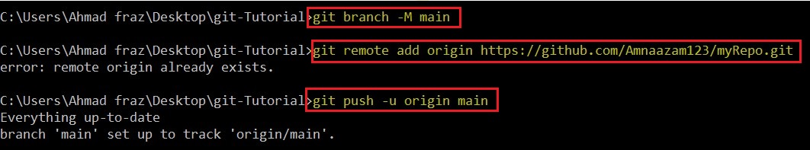
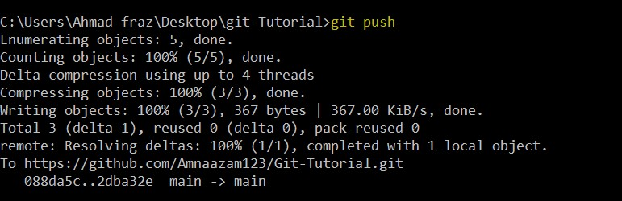

Name : Amna Azam
Roll no : BSEF19M009

What is git?
Git is a free and open source distributed version control system designed to handle everything from small to very large projects with speed and efficiency. Git tracks the changes you make to files, so you have a record of what has been done, and you can revert to specific versions should you ever need to. Git also makes collaboration easier, allowing changes by multiple people to all be merged into one source.Git is software that runs locally. Your files and their history are stored on your computer . You can also use online hosts (such as GitHub) to store a copy of the files and their revision history. Having a centrally located place where you can upload your changes and download changes from others, enable you to collaborate more easily with other developers.
Which git-commands we will see in this tutorial?

The commands are given below:
- git init
- git add
- git status
- git push
- git pull
- git checkout
- git branch
- git clean
- git clone
- git commit
- git config
- git fetch
- git log
- git merge
- git rebase
- git remote
- git rebase
- git reset
- git revert
Before proceeding, You must open command prompt in your directory and enter following commands:
1 - git init
The git init command creates a new Git repository. To initialize a repository, Git creates a hidden directory called . git . That directory stores all of the objects and refs that Git uses and creates as a part of your project's history. This folder is hidden to protect you from accidentally deleting its contents.
- To write this command, you will write git init and will press Enter.

2 - git status
The git status command displays the state of the working directory and the staging area. It lets you see which changes have been staged, which haven't, and which files aren't being tracked by Git. Status output does not show you any information regarding the committed project history.
- To write this command, you will write git status and will press Enter.
There may be different scenerios ehen you press git status command.
~ If you have untracked files :
~ If you have any modified files :
~ If you have all things updated :
3 - git add
The git add command adds a change in the working directory to the staging area. It tells Git that you want to include updates to a particular file in the next commit. However, git add doesn't really affect the repository in any significant way —changes are not actually recorded until you run git commit
- To write this command, you will write git add yourFileName and will press Enter.

If you want to add all files in stag area (not one by one), here you go :
4 - git push
The git push command is used to upload local repository content to a remote repository. Pushing is how you transfer commits from your local repository to a remote repo.
- To write this command, you will write following commands and will press Enter.
~ If you are pushing your data first time, you have to use following 3 commands in which you will give the address of your remote repository to these commands and will atell about branch as well.
~ Later on, you will use on git push command.
